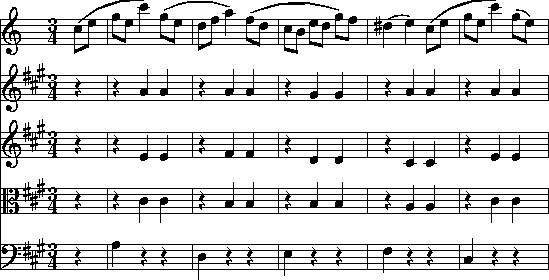

**freq
and
**cents
representations in
Chapter 4.
Much of this chapter will center on the
**spect
representation.
Three tools will be discussed in connection with **spect:
the
spect,
mask
and
sdiss
commands.
Spect
accesses a database of analyzed instrument
tones to generate harmonic spectra for all notes for various
orchestral instruments over their complete ranges;
mask
can be used to modify a spectrum so that
masked frequencies are attenuated in a manner that simulates human hearing;
sdiss
characterizes the degree of sensory dissonance for
arbitrary sonorities.
In addition, we will consider how Humdrum data can be used in conjunction with non-Humdrum tools -- such as digital sound editors, spectral analysis tools, and general signal processing software, In particular, we will discuss the kern2cs command which generates score data for the popular Csound digital sound synthesis language.
A useful predefined sound-related representations that
in Humdrum is the **spect scheme.
The
**spect
representation is used to represent successive
acoustic spectra.
Each data record represents a complete spectrum specified as a set
of concurrent discrete frequency components.
Each frequency component in the spectrum is represented
by a pair of numerical values separated by a semicolon (;).
These paired values encode the frequency and amplitude for a single
spectral component.
Frequency values are positive values representing hertz.
Amplitude values are positive values representing the sound pressure level
in decibels (dB SPL).
Most sonorities consist of more than one pure tone component,
so **spect data records typically encode a number of multiple stops.
Example 36.1 shows a sample document containing five spectra and a barline.
The first data record encodes an ambient spectrum ("silence")
represented by the upper-case letter `A'.
Following this are two spectra, each consisting of three spectral
components:
the first spectrum consists of a 261 Hz tone at 47 dB SPL,
as well as frequencies at 523 Hz and 785 Hz at 57 dB SPL
and 35 dB SPL, respectively.
Following the barline are two data records that represent two different
amalgamations of the preceding two three-component spectra.
Notice that these two spectra are identical;
only the order of the components differs.
In the **spect representation there is no special
requirement that the spectral components be encoded in any particular order.
However, it is often convenient to have the components assembled
from left to right in ascending frequency order.
This can be achieved by passing an input through the
spect
command.
Example 36.1
**spectA261;47 523;57 785;35330;57 659;35 989;27=1261;47 523;57 785;35 330;57 659;35 989;27261;47 330;57 523;57 659;35 785;35 989;27
More commonly,
the
spect
command is used to generate a
**spect
(acoustic spectral data) output from a
**semits
score input.
The
spect
command recognizes instrument tandem interpretations (e.g., *Iclarinet)
and fetches a corresponding spectral data file (clarinet.spe).
These files are derived from the SHARC database of music instrument
spectra created by Gregory Sandell (1991).
The file contains precise spectral measurements for recordings
of the instrument playing each note throughout the instrument's range.
Suppose that the input to
spect
contains the note F#5 for oboe (i.e., semits value 18).
Then
spect
will retrieve the spectral information for a recording of an oboe playing
F#5 and add it to the composite spectrum for the particular sonority.
If more than one instrument is playing concurrently, then spect will generate an output record representing the aggregate of all the spectral components generated by all of the sounding instruments.
The SHARC database includes most orchestral instruments including piccolo, E-flat clarinet, contrabassoon, etc. The database also includes selected Medieval instruments such as the soprano crumhorn and alto shawm. Timbres for string instruments are distinguished according to different playing methods including arco, vibrato, non-vibrato, pizzicato, mute, and martello.
Masking is the tendency for sounds to obscure one another. In many cases, masking may cause a sound to become completely inaudible. This means that the physical presence of a frequency component in a spectrum does not necessarily mean that the component is audible to the listener. Especially in the case of complex orchestral sonorities, many of the acoustically present components are irrelevant for human listeners. A clear demonstration of this effect is evident in digital sound recordings that have been processed using the JPEG compression scheme. JPEG-encoded audio is indistinguishable from the original uncompressed audio, yet the scheme eliminates those aspects of the sound which are masked.
The Humdrum
mask
command implements a common masking algorithm.
It accepts as input any **spect data,
and for each sonority modifies the spectrum so that
masked frequencies are attenuated accordingly.
So-called "forward" and "backward" masking are not
taken into account in this utlity.
No options are provided, and the command is invoked
as follows:
maskinputfile>outputfile
Both the output and input to the
mask
command are **spect representations.
A tandem interpretation (*masked) is added to the output
to indicate that the sonorities already reflect the influence
of masking.
Some sound utilities (such as the sdiss command) already
take into account the effects of masking, and so an input
containing the *masked interpretation will cause
an error to be generated.
Similarly, the mask command itself will generate an
error if the input sonorities have already been modified
using the mask command.
A great deal of research has been carried out over the centuries concerning the nature of consonance and dissonance. This complex subject remains something of an enigma. The perception of consonance or dissonance is known to be affected by a number of factors, including past musical experience and cultural milieu. Perceptions of dissonance are even known to be influenced by the personality of the listener.
Research by Donald Greenwood, Reiner Plomp, Wim Levelt, and others has established that one aspect of dissonance perception is related to the physiology of the ear. This aspect of dissonance is referred to as low-level or sensory dissonance.
The
sdiss
command implements a measurement method for sensory
dissonance described by Kameoka and Kuriyagawa (1969a/b).
(The Humdrum
sdiss
command itself was written by Keith Mashinter.)
The
sdiss
command characterizes the degree of sensory dissonance for
successive vertical sonorities or acoustical moments.
The command accepts as input one or more **spect spines and
produces a single
**sdiss
spine as output.
For each **spect data record,
sdiss
produces a single numerical value representing the
aggregate sensory dissonance.
The greater the output value, the greater the dissonance.
Example 36.2 illustrates some sample inputs and outputs for
sdiss.
The left-most spine provides double-stops for
**kern
data for violin.
The middle spine provides corresponding **spect data
using the
spect
command.
The right-most spine shows the result of passing the **spect
data through the
sdiss
command.
Example 36.2
**kern**spect **sdiss *Ivioln*Ivioln *Ivioln 4c 4e. . 4G 4d. . 4f 4g. . 4e 4g. . *-*- *-
Note that sensory dissonance is known to be influenced by the number of complex tones in the sonority. That is, three-note sonorities are virtually always more dissonant than three-note sonorities, etc. However, it is known that increasing the number of notes in a chord can sometimes reduce the perceived dissonance. For example, the dyad of a major seventh generally sounds more dissonant than the major-major-seventh (four-note) chord. Consequently, it is problematic to compare sensory dissonance values for sonorities consisting of different numbers of complex tones. Further problems with the Kameoka and Kuriyagawa measurement method are described in Mashinter (1995).
Apart from generating and processing acoustic spectra, it is often convenient to be able to listen to the data. Generating sounds from descriptions of acoustic spectra cannot be done using MIDI synthesizers. The sounds can be heard only by doing direct computer sound synthesis using an audio-rate digital-to-analog converter. A number of popular computer sound synthesis languages exist, such as Csound developed by Barry Vercoe (1993). Most of these languages are inspired by the Music 5 language developed by Max Mathews (1969).
Typically, these languages divide the task of sound synthesis into two representations called the score and the orchestra. The orchestra is an executable program, whereas the score is a set of note- or event-related data that is "performed" by the orchestra. Typically, the score consists of a series of note-records where each data record defines several attributes for a single note. Common attributes include the frequency (or pitch), amplitude, duration, onset time, attack/decay envelope, spectral content, etc. Example 36.3 shows a sample Csound score corresponding to the opening measures of a Mozart clarinet trio.
Example 36.3 W.A. Mozart Clarinet Quintet.
§ Example is modified from David Bainb§e (1997).
; W.A. Mozart, Second trio from Clarinet Quintetf1 0 512 10 5 3 1 ; three harmonics in waveform tablet0 96; tempo of 96 beats per minute
; Instrument #1; insttime duration slur pitch vol stac i1.010.000 0.500 1 9.00 0.2 1.0 ; measure 1 i1.010.500 0.500 3 9.04 0.2 1.0 i1.011.000 0.500 3 9.07 0.2 1.0 i1.011.500 0.500 3 9.04 0.2 1.0 i1.012.000 1.000 3 10.00 0.2 1.0 i1.013.000 0.500 3 9.07 0.2 1.0 ; measure 2 i1.013.500 0.500 3 9.04 0.2 1.0 i1.014.000 0.500 3 9.02 0.2 1.0 i1.014.500 0.500 3 9.05 0.2 1.0 i1.015.000 1.000 2 9.09 0.2 1.0 ; Instrument #2i2.012.000 1.000 0 8.09 0.2 1.0 i2.013.000 1.000 0 8.09 0.2 1.0 ; measure 2 i2.015.000 1.000 0 8.09 0.2 1.0 ; Instrument #3i3.012.000 1.000 0 8.04 0.2 1.0 i3.013.000 1.000 0 8.04 0.2 1.0 ; measure 2 i3.015.000 1.000 0 8.06 0.2 1.0 ; Instrument #4i4.012.000 1.000 0 8.01 0.2 1.0 i4.013.000 1.000 0 8.01 0.2 1.0 ; measure 2 i4.015.000 1.000 0 7.11 0.2 1.0§
Csound is able to generate traditional 16-bit digital audio output. It can also be used to generate AIFF files (audio information file format) for greater portability. Csound provides several other utilities for sound analysis, including Fourier analysis and linear predictive coding.
Humdrum does not provide any sound analysis tools per se. As we noted, Csound provides utilities for Fourier analysis and linear predictive coding. A wealth of software exists for sound analysis, loudness estimation, mixing, sound card input/output, CD audio input/output, and other sound-related applications. (See Tranter, 1996 for a sampling of such multimedia applications.) Other analysis methods are available through general-purpose signal analysis software such as matlab, mathematica, and maple. Custom software has also been written by Humdrum users, such as Kyle Dawkins Humdrum synchronization of CD audio disks.
Sound synthesis and analysis software has a rapid rate of development. Users should consult recent audio and multi-media resources for up-to-date information.
In this chapter we have seen that Humdrum score-related data can be transformed into spectral information using the spect command. This allows us to reconstitute a score as a sequence of sonorous spectra -- which might be used for studies in timbre or orchestration. The mask tool can be used to revise a spectral description so that it reflects how listeners hear rather than the actual acoustical information present. The sdiss command can be used to characterize successive spectra in terms of the estimated sensory dissonance.
We have also seen that Humdrum data can be connected to other sound-related software, such as Csound. Since Humdrum data consists of simple ASCII text, it is generally easy to write filters that allow the data to be imported to a wide variety of existing sound analysis and synthesis software.